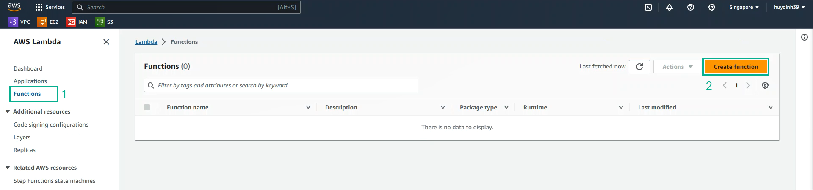
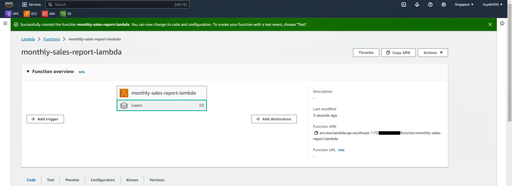

Hoàn thành Add report-layer vào Lambda Function
Copy và dán đoạn Code sau vào mục Code của Lambda Function
import os
import boto3
import json
import pytz
import psycopg2
import datetime
from openpyxl import Workbook
from openpyxl.chart import BarChart, Reference, shapes
from openpyxl.utils import get_column_letter
from openpyxl.styles import Font, Alignment, Border, Side, PatternFill
postgres_dbname = os.environ['postgres_dbname']
postgres_user = os.environ['postgres_user']
postgres_password = os.environ['postgres_password']
postgres_host = os.environ['postgres_host']
s3_bucket_result = os.environ['s3_bucket_result']
s3_bucket_web = os.environ['s3_bucket_web']
sns_topic_arn = os.environ['sns_topic_arn']
def get_data(month, year):
# Connect to Aurora PostgreSQL
conn = psycopg2.connect(f"dbname={postgres_dbname} user={postgres_user} password={postgres_password} host={postgres_host}")
cur = conn.cursor()
# Query Profit for Total Profit Chart
cur.execute(f"SELECT to_char(date_trunc('day', date), 'fmDD') AS date, SUM(profit) \
FROM sales \
WHERE EXTRACT(MONTH FROM date) = {month} AND EXTRACT(YEAR FROM date) = {year} \
GROUP BY date_trunc('day', date) \
ORDER BY date_trunc('day', date);")
data_profit = cur.fetchall()
# Query Profit for Top 10 Product Table
cur.execute(f"SELECT ROW_NUMBER() OVER (ORDER BY SUM(profit) DESC) AS id, product, SUM(profit) \
FROM sales \
WHERE EXTRACT(MONTH FROM date) = {month} AND EXTRACT(YEAR FROM date) = {year} \
GROUP BY product \
ORDER BY SUM(profit) DESC \
LIMIT 10;")
data_product = cur.fetchall()
# Query Profit for Top 10 Staff Table
cur.execute(f"SELECT ROW_NUMBER() OVER (ORDER BY SUM(sales.profit) DESC) AS id, staffs.name, SUM(sales.profit) \
FROM sales \
JOIN staffs ON staffs.id = sales.staff_id \
WHERE EXTRACT(MONTH FROM date) = {month} AND EXTRACT(YEAR FROM date) = {year} \
GROUP BY staffs.name \
ORDER BY SUM(sales.profit) DESC \
LIMIT 10;")
data_staff = cur.fetchall()
# Disconnect from Aurora PostgreSQL
cur.close()
conn.close()
return data_profit, data_product, data_staff
def create_report(month, year):
# Get data from Aurora PostgreSQL
data_profit, data_product, data_staff = get_data(month, year)
# Create new Excel Workbook
wb = Workbook()
ws = wb.active # Sheet 1
ws2 = wb.create_sheet(title="Reference") # Sheet 2
# Create Title Report
report_name = f"{datetime.datetime.strptime(str(month), '%m').strftime('%b')}-{year}-Monthly-Sales-Report"
ws.title = "Report"
ws["A1"] = f"Monthly Sales Report"
ws["A1"].alignment = Alignment(horizontal="center", vertical="center")
ws["A1"].font = Font(size=30, bold=True)
ws.merge_cells("A1:J1")
ws["A1"].fill = PatternFill(start_color="4cd137", end_color="4cd137", fill_type="solid")
ws["A2"] = f"{datetime.datetime.strptime(str(month), '%m').strftime('%b')}-{year}"
ws["A2"].font = Font(size=20, bold=True)
time_create = datetime.datetime.now(pytz.timezone('Asia/Ho_Chi_Minh')).strftime('%Y-%m-%d %H:%M:%S')
ws["I2"] = f"Issue: {time_create}"
ws["I2"].font = Font(italic=True)
# Add Total Profit Data to Sheet2
for row_data in data_profit:
ws2.append(row_data)
# Create Total Profit Chart
chart = BarChart()
chart.title = "Total Profit Chart by Day"
chart.width = 16
chart.height = 10
chart.x_axis.title = "Day"
chart.y_axis.title = "Profit ($)"
data_range = Reference(ws2, min_col=2, max_col=2, min_row=1, max_row=len(data_profit))
labels = Reference(ws2, min_col=1, min_row=1, max_row=len(data_profit))
chart.add_data(data_range)
chart.set_categories(labels)
chart.graphical_properties = shapes.GraphicalProperties()
chart.graphical_properties.line.noFill = True
chart.style = 8
chart.legend = None
# Add Total Profit Chart to Sheet1
ws.add_chart(chart, "A6")
# Create Title Top 10 Product Table
ws["B29"] = "Top 10 Products"
ws["B29"].font = Font(size=18, bold=True)
ws["B29"].alignment = Alignment(horizontal="center", vertical="center")
ws.merge_cells("B29:D29")
# Create Title Top 10 Staff Table
ws["G29"] = "Top 10 Staffs"
ws["G29"].font = Font(size=18, bold=True)
ws.merge_cells("G29:I29")
ws["G29"].alignment = Alignment(horizontal="center", vertical="center")
# Format Header Table
cell_format = {
"B31": ["id", "B", "B31", 2],
"C31": ["Product", "C", "C31", 1.1],
"D31": ["Total_Profit", "D", "D31", 1.1],
"G31": ["id", "G", "G31", 2],
"H31": ["Staff", "H", "H31", 1.5],
"I31": ["Total_Profit", "I", "I31", 1.1]
}
thin_border = Border(left=Side(style="thin"),
right=Side(style="thin"),
top=Side(style="thin"),
bottom=Side(style="thin"))
for cell, cell_value in cell_format.items():
ws[f"{cell}"] = f"{cell_value[0]}"
ws[f"{cell}"].font = Font(size=12, bold=True)
ws[f"{cell}"].fill = PatternFill(start_color="0abde3", end_color="0abde3", fill_type="solid")
ws[f"{cell}"].border = thin_border
ws[f"{cell}"].alignment = Alignment(horizontal="center", vertical="center")
ws.column_dimensions[f"{cell_value[1]}"].width = len(str(ws[f"{cell_value[2]}"].value)) * cell_value[3]
# Insert Value Top 10 Product Table
for row_idx, row in enumerate(data_product, 32):
for col_idx, value in enumerate(row, 2):
col_letter = get_column_letter(col_idx)
ws[f"{col_letter}{row_idx}"] = str(value)
ws[f"{col_letter}{row_idx}"].border = thin_border
ws[f"{col_letter}{row_idx}"].alignment = Alignment(horizontal="center", vertical="center")
# Insert Value Top 10 Staff Table
for row_idx, row in enumerate(data_staff, 32):
for col_idx, value in enumerate(row, 7):
col_letter = get_column_letter(col_idx)
ws[f"{col_letter}{row_idx}"] = str(value)
ws[f"{col_letter}{row_idx}"].border = thin_border
ws[f"{col_letter}{row_idx}"].alignment = Alignment(horizontal="center", vertical="center")
# Save Excel
ws.page_setup.orientation = ws.ORIENTATION_PORTRAIT
ws.print_options.horizontalCentered = True
wb.save(f"/tmp/{report_name}.xlsx")
# Upload pdf file to S3
url = upload_report_to_S3(f"/tmp/{report_name}.xlsx", f"{s3_bucket_result}")
# Send Presigned URL to send User to Download Report
sns_send_report_url(report_name, url)
return report_name, url
def upload_report_to_S3(file_name, s3_bucket_result, object_name=None):
# If S3 object_name was not specified, use file_name
if object_name is None:
object_name = os.path.basename(file_name)
# Upload the file to S3 Bucket
s3_client = boto3.client("s3")
s3_client.upload_file(file_name, s3_bucket_result, object_name)
# Create Presigned URL to send into User to Download Report
url = s3_client.generate_presigned_url("get_object", Params={"Bucket": s3_bucket_result, "Key": object_name},
ExpiresIn=604800)
return url
def sns_send_report_url(report_name, url):
sns_client = boto3.client("sns")
message = f"{report_name} has been successfully created!\n\nThis is URL to Download Report : {url}"
# Send message to SNS topic
response = sns_client.publish(
TopicArn=sns_topic_arn,
Subject=report_name,
Message=message,
MessageStructure="string"
)
def lambda_handler(event, context):
headers = event['headers']
origin = f'https://{s3_bucket_web}.s3.ap-southeast-1.amazonaws.com'
response_headers = {
'Content-Type': 'application/json',
'Access-Control-Allow-Origin': origin
}
if headers.get('origin') != None and headers.get('origin') == origin or headers.get('origin') == 'event-bridge':
if headers.get('origin') == origin:
month = json.loads(event['body'])['month']
year = json.loads(event['body'])['year']
if headers.get('origin') == 'event-bridge':
month = (datetime.date.today().replace(day=1) - datetime.timedelta(days=1)).month
year = (datetime.date.today().replace(day=1) - datetime.timedelta(days=1)).year
report_name, url = create_report(month, year)
response = {
'statusCode': 200,
'headers': response_headers,
'body':
json.dumps({
'status': 'Success',
'report_name': report_name,
'url': url
}),
}
return response
return {
'statusCode': 403,
'headers': response_headers,
'body': json.dumps({'status': 'Forbidden!'}),
}
Chức năng của các Function trong Lambda Function:
get_data: Kết nối với Aurora PostgreSQL để lấy dữ liệu
create_report: Nhận dữ liệu từ hàm get_data, tạo Excel Report
upload_report_to_S3: Upload Report đến S3 và tạo Presigned URL
sns_send_report_url: Gửi mail thông báo và Presigned URL đến User để Download Report
lambda_handler: Xử lý sự kiện đầu vào từ Static Website hoặc EventBridge, có logic cho phù hợp để tính toán 2 month and year làm input cho hàm create_report